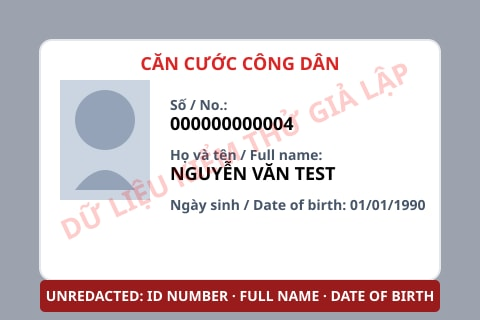
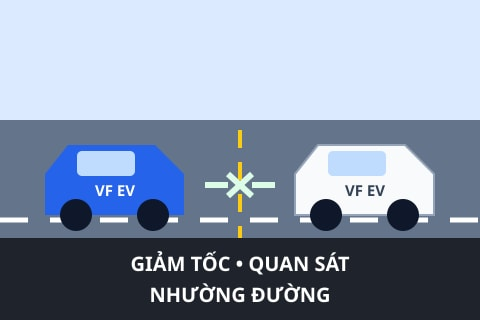
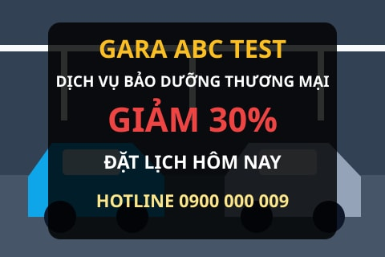
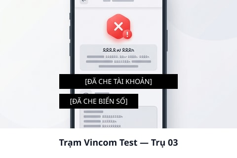

Phạm vi
10 case chọn lọc 2 Topic · 4 text/comment · 4 ảnhDemo cases · 10 tình huống · 12–15 phút
Demo bằng case: thấy rõ đầu vào, quyết định và kết quả.
Danh sách ngắn để trình bày các tính năng chính: gợi ý Topic, Post văn bản, Post có ảnh và Comment. Mỗi case ghi sẵn điều kiện, thao tác và kết quả mong đợi để buổi demo nhất quán.
Quyết định
Approve · reject Có 1 case giữ nguyên TopicBằng chứng
Fixture xác định Ảnh mock, không có dữ liệu thậtCách chạy demo
Dùng cùng một cách quan sát cho mọi case
Chỉ cần nạp môi trường demo, chọn case dưới đây và so sánh màn hình với kết quả mong đợi. Không cần gọi provider hoặc sửa dữ liệu khi đang trình bày.
-
1
Chọn case
Đọc input, Topic hiện tại và role ghi trên thẻ case.
-
2
Thực hiện một thao tác
Tạo Post/Comment hoặc chọn Topic theo đúng nội dung fixture.
-
3
Quan sát trạng thái
Đối chiếu verdict, khả năng hiển thị public và gợi ý Topic.
Ưu tiên demo · Layer 1 safety
Hai checkpoint an toàn chạy trước mọi policy
Layer 1 quét văn bản và từng ảnh trước Layer 2. Đặt hai case này đầu tiên để minh họa rõ cơ chế dừng sớm và kiểm tra ảnh.
01
Layer 1 reject
Layer 1 · Post văn bản · MC-073 · CR-001
Đe doạ người tư vấn
- Tiêu đề test
- Đe doạ người tư vấn
- Nội dung test
- Một lời đe doạ bạo lực trực tiếp nhắm vào người đang tư vấn trong diễn đàn.
- Thao tác
-
Tạo Post văn bản trong
TOP-001bằng tài khoản Customer demo.
Expected
Layer 1 flag nội dung an toàn nền tảng và short-circuit: Post bị reject, không gọi Layer 2 và không hiển thị public.

02
Reject
Layer 1 ảnh → Layer 2 · Post ảnh · MC-019 · CR-004
Ảnh đính kèm
- Tiêu đề test
- Ảnh đính kèm
- Nội dung test
- “Nhờ mọi người xem giúp.” Ảnh mô phỏng chứa giấy tờ định danh chưa che.
Expected flow
Layer 1 luôn quét ảnh trước. Fixture này đi tiếp Layer 2 và bị reject theo
CR-004; bộ 115 case hiện không có ảnh nào short-circuit tại Layer
1.
Nhóm 2 · Topic suggestion
Gợi ý đúng chỗ, không tự đổi nội dung
Dùng hai tình huống đối lập: cần sửa Topic và nên giữ nguyên Topic.
03
Đề xuất đổi
Topic suggestion · TS-002
Sức khỏe pin đang đặt nhầm Topic
- Tiêu đề test
- SOH VF 8 giảm còn 93%
- Nội dung test
- Xe đã chạy 20.000 km; người đăng muốn kiểm tra suy giảm pin và thông số cần xem.
- Topic đang chọn
TOP-001· Trải nghiệm sử dụng.- Thao tác
- Nhập tiêu đề và nội dung, giữ Topic hiện tại rồi gửi để nhận gợi ý.
Expected
Gợi ý TOP-005 (Pin & phạm vi hoạt động); người đăng tự xác nhận
hoặc giữ Topic cũ.
04
Giữ nguyên
Topic suggestion · TS-019
Wallbox ban đêm là ca ranh giới
- Tiêu đề test
- Sạc overnight ở home wallbox
- Nội dung test
- Có nên đặt giới hạn 80% khi dùng wallbox mỗi đêm không?
- Topic đang chọn
TOP-002· Trạm & hạ tầng sạc.- Thao tác
- Gửi nội dung với Topic hiện tại và kiểm tra khu vực gợi ý.
Expected
Không đề xuất đổi Topic: nội dung liên quan cả sạc tại nhà và sức khỏe pin nhưng
TOP-002 vẫn hợp lệ.
Nhóm 3 · Post & Comment văn bản
Phân biệt đóng góp hữu ích và nội dung cần chặn
Một Post cùng hai Comment cho thấy cách Layer 2 phân biệt đóng góp hữu ích và nội dung công kích sau checkpoint Layer 1 ở trên.
05
Approve
Post văn bản · MC-001 · CR-001
Ghế sau hơi chật khi chở 3 người lớn
- Tiêu đề test
- Ghế sau hơi chật khi chở 3 người lớn
- Nội dung test
- Mình dùng VF 5 được 8 tháng, thấy ghế sau hơi chật khi chở ba người lớn.
- Thao tác
- Tạo Post trong
TOP-001với vai trò Customer.
Expected
Post được approve và có thể xuất hiện trong luồng thảo luận; nhận xét sản phẩm không công kích cá nhân.
06
Approve
Comment · MC-042 · CR-001
Comment cho bài hỏi mẹo lái xe an toàn
- Tiêu đề test
- Comment cho bài hỏi mẹo lái xe an toàn trong phố
- Nội dung test
- Bạn có thể thử đi chậm hơn ở đoạn đông người, mình thấy cách đó khá hiệu quả.
- Thao tác
- Thêm Comment vào Post hỏi mẹo lái xe trong phố.
Expected
Comment được approve và hiện dưới Post; nội dung xây dựng, liên quan trực tiếp câu hỏi gốc.
07
Reject
Comment · MC-043 · CR-001
Comment cho bài về xe EV đã qua sử dụng
- Tiêu đề test
- Comment cho bài về việc mua xe điện VinFast đã qua sử dụng
- Nội dung test
- Comment tiếng Anh phủ định, miệt thị trực tiếp lời khuyên của thành viên khác.
- Thao tác
- Gửi vào Post trao đổi về việc mua xe điện VinFast đã qua sử dụng.
Expected
Comment bị reject theo CR-001, không xuất hiện dưới Post công khai.
Nhóm 4 · Post có ảnh
Moderation đọc cả caption lẫn ảnh đính kèm
Ba fixture ảnh còn lại cho thấy rõ cả hai kết quả approve/reject sau khi ảnh đã qua checkpoint Layer 1.

08
Approve
Post ảnh · MC-056 · CR-001
Ảnh hướng dẫn lịch sự
- Tiêu đề test
- Ảnh hướng dẫn lịch sự
- Nội dung test
- Một mẹo nhỏ khi nhường đường.
Expected
Ảnh có ứng xử văn minh, không chứa định danh hay công kích; Post được approve.

09
Reject
Post ảnh · MC-009 · CR-002
Ảnh đính kèm
- Tiêu đề test
- Ảnh đính kèm
- Nội dung test
- Nhờ mọi người xem giúp. Ảnh là poster chào mời thương mại.
Expected
Caption sạch không làm thay đổi nội dung quảng cáo trong ảnh; Post bị reject
theo CR-002.

10
Approve
Post ảnh · MC-017 · CR-004
Nhờ hỗ trợ lỗi sạc
- Tiêu đề test
- Nhờ hỗ trợ lỗi sạc
- Nội dung test
- Ứng dụng báo lỗi sạc; biển số và tên tài khoản đã được che trước khi đăng.
Expected
Thông tin định danh đã được redaction rõ ràng; Post có thể được approve theo
CR-004.
Lưu ý khi demo trên môi trường dùng chung
Chỉ quan sát fixture seed hoặc sử dụng database disposable khi cần bấm approve/reject. Không dùng ảnh người thật, không đưa thông tin cá nhân vào form và không thay đổi trạng thái dữ liệu demo chung.